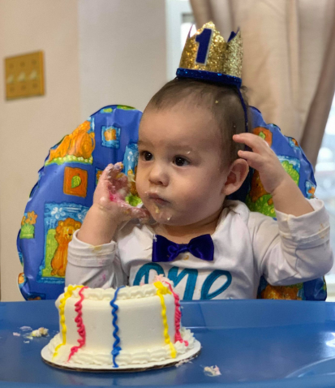
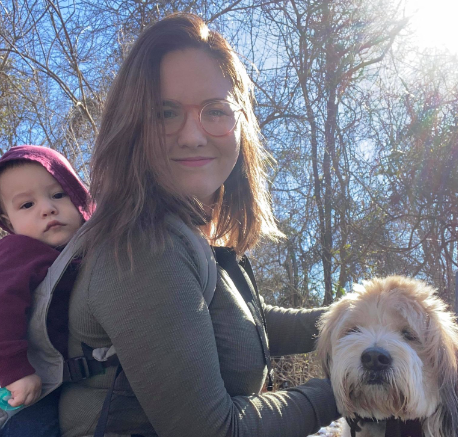

My name is Kristopher Esparza and I was born and raised in the small town of Fremont Ohio. I am coming up on 10 years in the Air Force and have seen many different places. Currently, I am deployed and my home station is in Scott AFB I have been there for over 4 years now and love the area. There is so much to do around the base with St. Louis being 30 minutes away. My girlfriend and I just celebrated my son's first birthday, which was a little disappointing since I wasn't able to celebrate it with them. I will be heading back soon, close to the time this class is ending, so we hope to make up for the lost time.
 